Next: Shell knot Up: Mathematical description of a Previous: Mathematical description of a Contents
The expansion of a single beam node leads to a planar set of nodes. Therefore, the stretch of a knot based on this expansion is reduced to the stretch along the two principal directions in that plane. The stretch in the direction of the beam axis is not relevant. Let us assume that
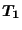 is a unit vector tangent to the local beam axis and
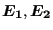 are two unit vectors in the expansion plane such that
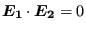 and
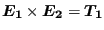. Then, the stretch in the plane can be characterized by vectors
 and
and
 along its principal directions:
along its principal directions:
| 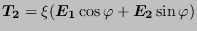 | (173) |
| 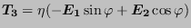 | (174) |
leading to three stretch degrees of freedom  ,
,  and
and  .
.  is the angle
is the angle
 makes with
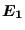,
makes with
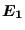,  is the stretch along
is the stretch along
 and
and  is the stretch along
is the stretch along
 . The right stretch tensor
. The right stretch tensor
 can now be written as:
can now be written as:
| 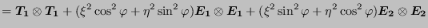 | ||
| 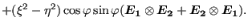 | (175) |
The rotation vector reads in component notation
| 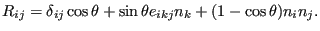 | (176) |
Here,
 is a vector along the rotation axis satisfying
is a vector along the rotation axis satisfying
 ,
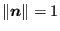. Assuming that at some point in the calculation the knot is characterized by
,
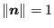. Assuming that at some point in the calculation the knot is characterized by
 , a change
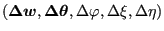 leads to (cf. Equation (171)):
, a change
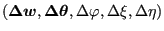 leads to (cf. Equation (171)):
| 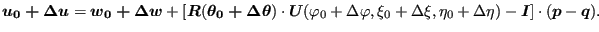 | (177) |
Taylor expansion of 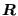:
 |
(178) |
and similar for
 and keeping linear terms only leads to the following equation:
and keeping linear terms only leads to the following equation:
| 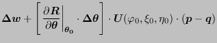 | ||
| 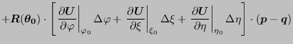 | ||
| (179) |
The latter equation is a inhomogeneous linear equation linking the change in displacements of an arbitrary node belonging to a knot to the change in the knot parameters (translation, rotation and stretch). This equation is taken into account at the construction phase of the governing equations. In that way the expanded degrees of freedom, being dependent, never show up in the equations to solve.